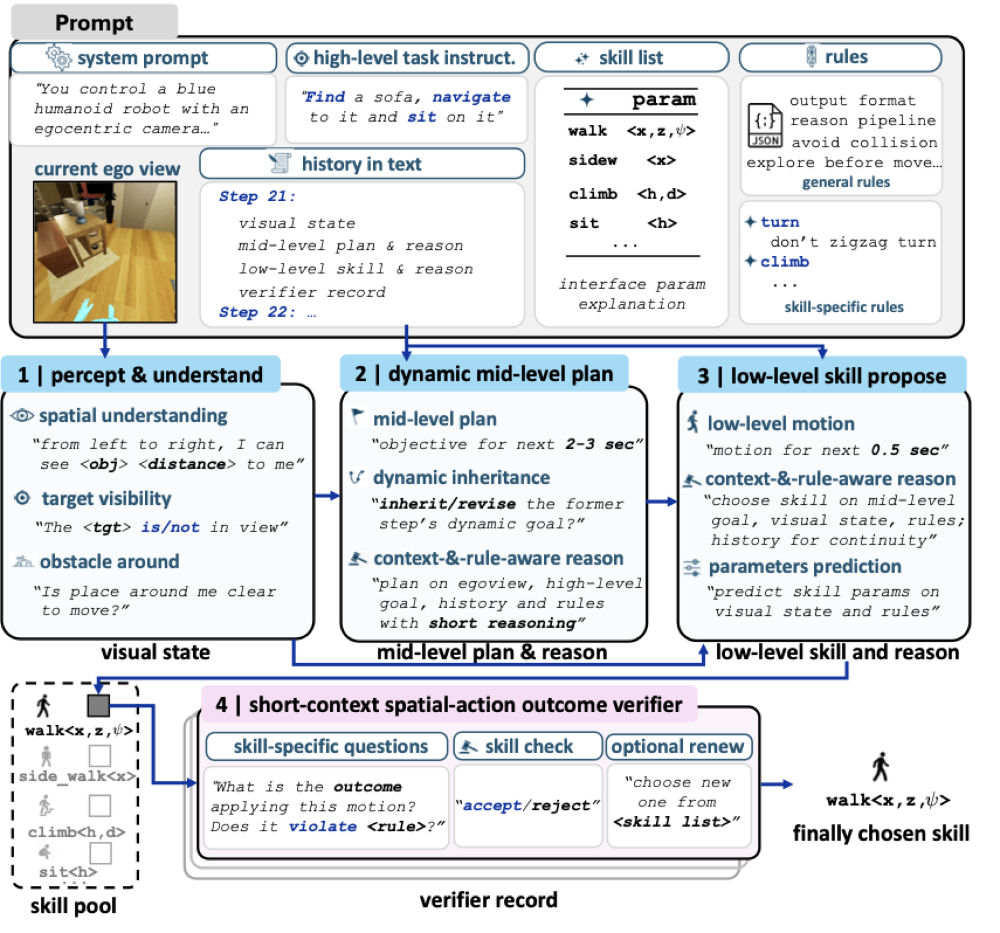
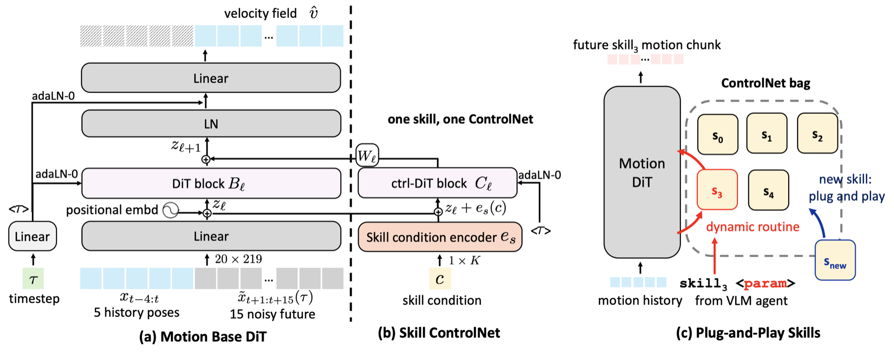

The HumanCLAW Framework

HumanCLAW separates three roles that are usually coupled. At each step, the VLM skill harness reads the egocentric view and outputs an atomic skill decision; a verifier rejects unsafe, premature, or physically invalid decisions; the motion generator continues full-body motion conditioned on the accepted skill; and the half-physics simulator executes it with real scene consequences, feeding the next egocentric observation back to the VLM—closing the loop at a sub-second action timescale.
VLM Skill Harness
Skill Motion Generation
Half-Physics Simulator

At every 0.5 s step, the frozen VLM receives the system prompt, the task instruction, the registered skill list & rules, the text history, and the current ego view. It then reasons in three stages: percept & understand (spatial layout, target visibility, obstacles → visual state), dynamic mid-level plan (a 2–3 s objective, inherited or revised from the last step), and low-level skill proposal (one atomic skill plus its parameters).
A short-context spatial-action outcome verifier then interrogates the proposal with skill-specific questions—what would this motion do, does it violate a rule?—and accepts, rejects, or renews it from the skill pool before it ever reaches the body.

A motion-continuation DiT serves as the human motion prior: given 5 history poses, it denoises the next 15 future frames as a velocity field, producing continuous, natural full-body motion chunk by chunk.
One skill, one ControlNet: each skill gets a lightweight ctrl-DiT adapter fed by a skill
condition encoder. Adapters live in a plug-and-play ControlNet bag—the VLM’s
skill<param> decision routes dynamically to the matching adapter, and a new skill can
be registered without retraining the base model.
(a) Without skill control, the prior collapses into colliding poses.
(b) With control, walk tracks the requested 0.3 m stride.
(c) Skills compose with natural transitions into a loop.
(d) sit at heights 0 / 0.5 / 0.8 m realizes the commanded parameter.
Generated motion is executed kinematically while the world responds physically: a wall actually blocks the body (pass wall), a touched object is displaced (object collision), and gravity plus ground contact shape the motion on stairs (climb). Consequences are real, yet balance and motor-tracking failures are factored out—so when an episode fails, the failure is attributable to the decision, not to a locomotion controller.
(a) Pass wall · Kinematic: the body walks straight through the wall.
(a) Pass wall · Half-Physics: the wall blocks the body, which detours around it.
(b) Object collision · Kinematic: the cart never reacts.
(b) Object collision · Half-Physics: the foot knocks the cart away.